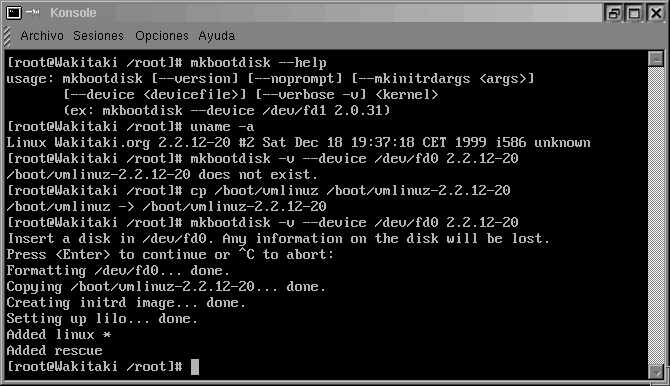
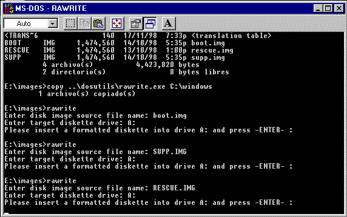

[ < ][
|| ][ > ]
CREAR DISQUETES DE ARRANQUE PARA EL MANTENIMIENTO DEL SISTEMA:
Creación de disquetes:
-
Con mkbootdisk desde LINUX.
-
Con "RAWRITE.EXE", desde MS-DOS/WINDOWS.
-
Con los procesos: "Instalación/Actualización".
(Del CD-ROM)
-
Con: make bzdisk, compilando en núcleo.
-
¿Qué se recomienda?
Es fundamental poder disponer de disquetes para casos "NO QUERIDOS"
[ ^ ]
Crear disquetes con: "mkbootdisk"
Debe de existir el fichero /boot/vmlinuz-version.nucleo-revision
Si sólo existiera /boot/vmlinuz, esribimos: uname -a y saldrá:
Linux localhost.localdomain version.nucleo-revision # Date_today,
time_today machine unknown
Copiamos: cp /boot/vmlinuz /boot/vmlinuz-version.nucleo-revision
Ahora escribimos:
-
mkbootdisk --verbose --device /dev/fd0 version.nucleo-revision
-
¡Ya está!, ya tenemos un disquete de arranque en aproximádamente
25 segundos.
Ejemplo gráfico:

Con RAWRITE, desde MSDOS/WINDOWS
Lo primero que deberemos de hacer es:
-
Ir a MS-DOS/Windows o Ejecutar un emulador de MS-DOS
UNA VEZ EN EL DOS:

Es un grave error no crear disquetes del sistema para la reparación
del mismo, su creación es muy simple:
-
Cambiamos de unidad escribiendo: [Letra_del_cd-rom]:
(Por ejemplo: D:, E: o F: etc.)
-
Copiamos el fichero: [letra_del_cd-rom]:\dosutils\rawrite.exe C:\WINDOWS
-
Cambiamos al directorio: CD \IMAGES
-
Escribimos: RAWRITE
-
De las 3 imágenes que habrá: (BOOT.IMG, RESCUE.IMG y SUPP.IMG)
tendremos que elegir por lo menos 2, un disquete para cada imagen preparamos
y seleccionamos: boot.img, para el primer disquete (de arranque) y rescue.img
(de rescate) en el segundo disquete.
En este momento, el trabajo ha concluido, mete el disquete con la
imagen (BOOT.IMG) y reinicia... A partir de ahí tendrás que
seguir las instrucciones que te den:
[ ^ ]
Procesos Instalación/Actualización: (Del CD-ROM)
Con los procesos de instalación/actualización, de los
CD-ROM, se pueden crear disquetes de arranque, que más que otra
cosa sirven exclusivamente para hacer ejecutar el sistema cuando el núcleo
falla, o tiene un error determinado en el proceso de arranque, o simplemente
se ha olvidado la clave de acceso como root.
Ventajas:
Inconvenientes:
-
Gran nivel de limitación (con respecto al creado con RAWRITE)
-
No puede ser transferido a otras personas si tienen colocadas las particiones
en distintos puntos (HDA1 por HDA3, etc., etc...)
[ ^ ]
Con: Make bzdisk
El proceso que se sigue para crear un disco de esta manera, es de la
misma forma que se Compila el
Núcleo. Excepto que alteramos un comando.
FORMA:
-
make menuconfig ( xconfig si se va a configurar desde X-Window)
-
make dep
-
make clean
-
make bzdisk ( bzImage, si se quisiera compilar el núcleo,
recuerda. ;-) )
-
Uso: El disquete creado de esta forma, generalmente se utiliza para (sin
llegar a instalarlo, luego NO editando el fichero lilo.conf, y colocar
el fichero núcleo en el directorio /boot/ ), saber si funciona.
-
Para uso de rescate en caso de que se "dañara" el núcleo
(o núcleos) que tuvieramos en /boot/
VENTAJAS:
Se crea rápidamente ( habiendo ya usado el proceso de la compilación
del núcleo), osea, compilas el núcleo y después creas
el disco. haciendolo de esta forma, puede ser prestado a varias personas,
ya que no depende exclusivamente donde tengas colocada tu partición,
usa cualquier Sistema de Ficheros (vfat, dos, ext2...)
-
Metodo a seguir: (Estando ya en el directorio /usr/src/linux), 1 de ellos
puede ser usando el Script "CompilaNucleo" del tutorial y luego usar make
bzdisk:
-
make menuconfig
-
CompilaNucleo
-
make bzdisk (y ahora, con todo ya compiladito, creas el disco)
-
make menuconfig
-
make dep
-
make clean
-
make bzImage (creas el núcleo)
-
make bzdisk (y ahora, con todo ya compiladito, creas el disco)
INCONVENIENTES:
-
No sirve para disco de rescate en muchas ocasiones, si por ejemplo se han
movido datos, o se han corrompido los ficheros de inicio/carga de módulos
y similar. (En este caso, es similar al disco de arranque que se crea en
el proceso de instalación)
[ ^ ]
Recomendación:
-
Crear disquetes con mkbootdisk
(Si no pudiera con mkbootdisk)
-
Crear disquetes con RAWRITE
(Si no pudiera con RAWRITE)
-
Crear al menos un disquete con bzdisk.
[ ^ ]